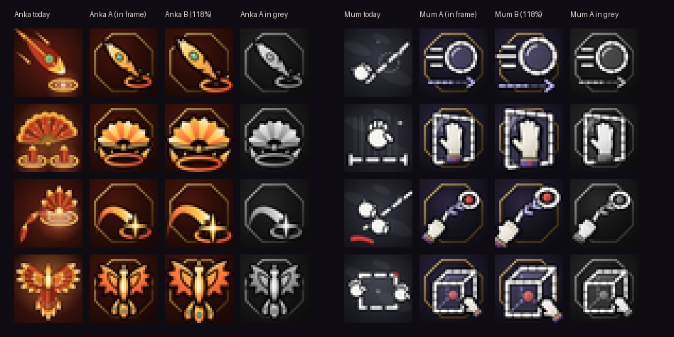
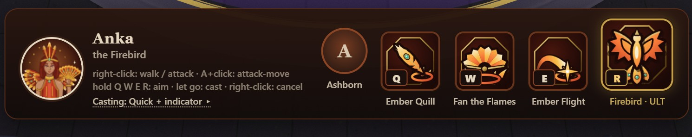
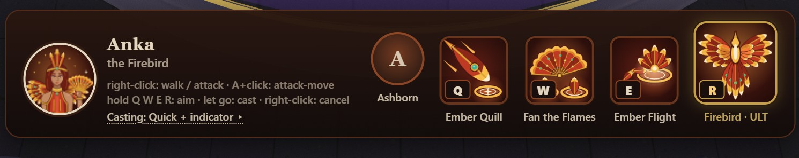
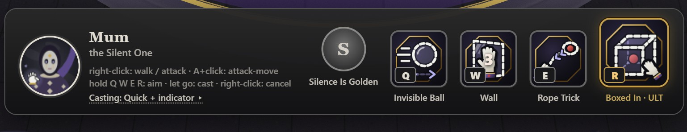
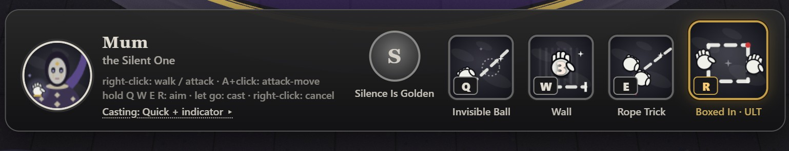
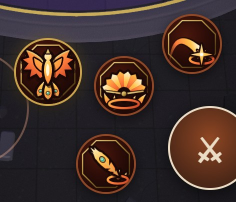
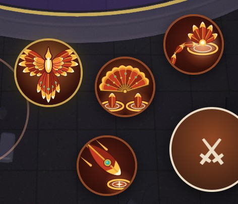
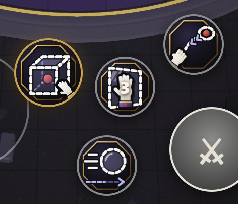
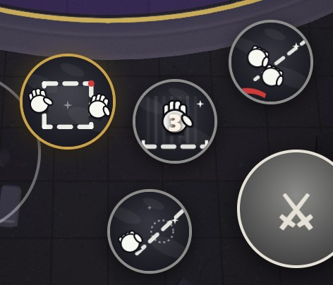

Spell icons drawn with VectorCraft: a sample
2026-11-15 · two heroes, four spells each · nothing in the game has changed. The new icons only show with
?icons=vc in the URL, on this branch.
The two heroes
Anka the Firebird, the newest hero, as you asked. Mum the Silent One is the older hero whose icons read worst at small size. I drew all 40 heroes' current icons at 32 px. Mum's four were all the same: a round white mitt, white dots and thin dashed lines on grey, with almost no colour. At 32 px they can't be told apart, and the mitt reads as a cartoon glove. Bram and Bo were close behind (grey on grey).
Mum has no row in the art bible's palette (section 2). I used a proposed "Dusk / chalk" row built from her kit's own
colours (src/kits/mime.ts) and her lore: a porcelain glove, a violet ribbon cuff with a gold edge, a red harlequin diamond. I have not
edited the art bible; say yes and I'll add the row.
One family: the rules
- One frame: the hero's dark ground and an octagon medallion with a thin gold edge. The octagon fits inside the desktop slot (a rounded square) and inside the phone slot (a circle), so nothing is cut off on either.
- One light: from the upper left. Shapes are lit there and the main ones cast a soft shadow down and to the right. (Two exceptions: the fan's folds glow from the pivot out, fire hottest at the edge, and the flight streak fades along its path.)
- One outline: every main shape has the same dark outline (1.25 px at 32 px); small parts a little thinner. Gold lines are thinner still: they are detail, not what the icon says.
- A quiet lower-left corner: the spell bar puts the key letter there (see the bar pictures: it hides the end of Mum Q's floor arrow). A full set would keep that corner empty.
- Colour: each hero's palette row, gold only on edges and small details (the frame edge, the feather quill, the fan's guard sticks, the cuff's trim).
- One sign per hero in every spell: Anka's ember ring and eyed feather; Mum's dashed chalk for what can't be seen, and her glove.
Side by side
Both columns are drawn the way the game draws them: a 128 px source scaled down by the browser to 64, 48 and 32 px.
At 32 px, enlarged three times: A and B
The icons brought down to 32 px, then shown three times larger so the pixels show. A is the picture inside the frame (the one above and in the bar), B the same picture at 118%, over the frame's edge. The grey column checks that each icon still reads without colour.

In the real spell bar
The game's own hero HUD (the same code as in /game), in a CPU duel started from the tool page, with
?icons=vc (new, variant A) and without (today). Desktop 1280 wide; phone 375 wide, where the slots are round.








What I see
- Mum: a clear step up. Each spell now has its own shape (a ball in flight, a hand on a pane, a rope and loop, a box), and the four differ at 32 px, also in grey.
- Anka: closer. Her icons today are already rich and readable. The new ones are cleaner and match the others, but in A the frame takes some room, so the picture is a little smaller. B wins that room back; I'd pick B.
- The old icons fill the whole square edge to edge; the new ones look like a set. That is the trade.
File sizes
| Icon | SVG | SVG gzipped | PNG 128 px |
|---|---|---|---|
| Anka Q | 10.2 KB | 2.7 KB | 11.7 KB |
| Anka W | 10.9 KB | 2.2 KB | 13.2 KB |
| Anka E | 6.5 KB | 2.0 KB | 11.4 KB |
| Anka R | 17.7 KB | 3.9 KB | 14.9 KB |
| Mum Q | 3.8 KB | 0.9 KB | 12.0 KB |
| Mum W | 7.5 KB | 2.1 KB | 12.2 KB |
| Mum E | 8.8 KB | 2.3 KB | 12.1 KB |
| Mum R | 9.1 KB | 2.3 KB | 12.5 KB |
| All 8 | 74.5 KB | 18.4 KB | 100 KB |
Variant B is 2-11% bigger. For 160 spell icons that is about 1.5 MB of SVG, about 370 KB as sent (Cloudflare compresses it).
How I'd load them in the game
- One SVG file per icon, fetched when a hero's slots are built, about 2-4 KB each as sent. That is what the sample does
(
src/icons/vc.ts) and what the bar pictures show working: the file loads as an image andicon(g, size)draws it into the slot's canvas, so the code around the icons does not change. Only the heroes on screen are fetched, and the kit's canvas drawing can stay as the fallback while a file loads. - If four requests per hero ever matter: one strip per hero (the four icons side by side, 512 x 128), each slot drawing its quarter.
Before joining SVGs into one file their gradient names must be made unique: VectorCraft names them
linear-gradient-1,-2… in every file, so in a shared file one icon would take another's colours. A few lines in the join step.
Notes on VectorCraft
- How long (my clock, not counting your review): learning the tool's commands took about 13 minutes. The frame and the first icon took about 6 minutes; the other seven, with four redraws (Anka's fan and landing, Mum's Q twice), about 11 minutes. So about 1.5 to 2 minutes an icon once a hero's own shapes exist, and a few minutes more for each new hero's shapes (Anka's feather, Mum's glove). VectorCraft itself makes each icon in under 2 seconds (up to 15 s when the computer is busy).
- Good: it runs with no window from a list of commands, so every icon can be made again exactly
(
pipeline/icons/vectorcraft/<hero>/<slot>.json). The commands are those of a full vector editor: Pathfinder joins and cuts (the glove is joined from 7 rounded shapes; the feather's notches are cut out), rotate-copy around a point (the fan's folds), mirror-copy (the firebird's wings and tail), dashed lines, gradients that can fade out. The SVG it writes is clean and small, and its PNG matches it. - Bad: it has no AI drawing: every shape is placed by coordinates I chose, so the drawing is only as good as the code that makes the
points. Tapered strokes (width profiles) come out in the SVG as a jagged outline of 70 points with 15 repeated ones, so I drew tapers myself.
"Stroke outside" comes out as an SVG mask (more bytes, and clashing names in a shared file), so I used a copy underneath instead.
New shapes take the last paint used, so every shape must be painted explicitly. Referring to a copy's id inside a list needs
$N.ids.0, which the help does not say. Nothing crashed. - All 40 heroes (about 160 spell icons, 200 with passives): the frame, the rules and the export are done. What is left is each hero's own shapes (a feather, a glove, a hammer…) and four pictures, about 10 to 15 minutes of my time a hero, so about 7 to 10 hours for the 38 left, in batches of 8. What takes longer is your eye: one review round per batch, and from this sample about one icon in three needs a redraw after a look (Mum's Q read as a magnifying glass twice before it read as a ball). Plan about 5 batches, each ending in a page like this one for your yes. The passives have no icon in the spell bar today (a letter in a badge); they could get one the same way.
Files: the generator pipeline/icons/vectorcraft/make.py (the rules and each icon's drawing), the command files
pipeline/icons/vectorcraft/anka/ and mum/, today's icons old-icons.js, the bar pictures bar-shots.py, the 32 px sheet
zoom-sheet.py.